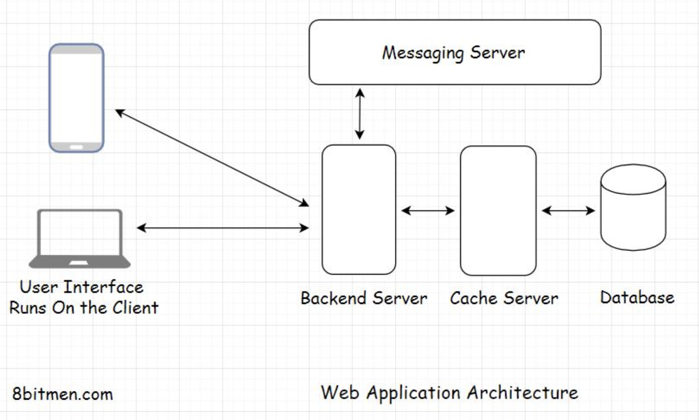
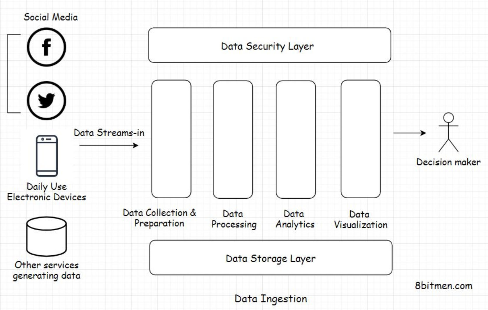
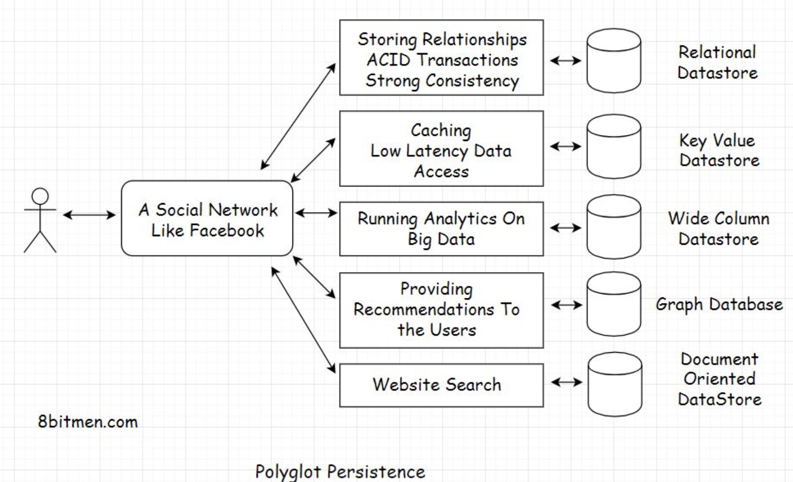
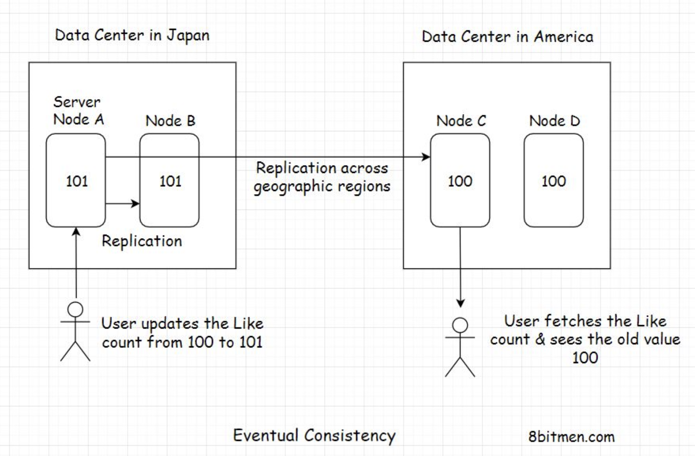
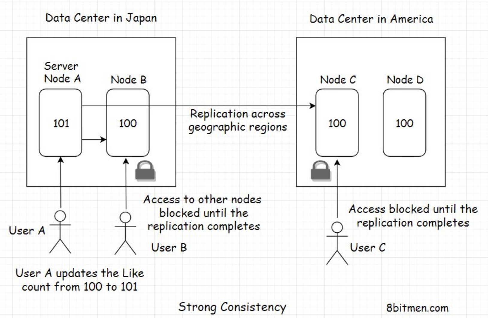
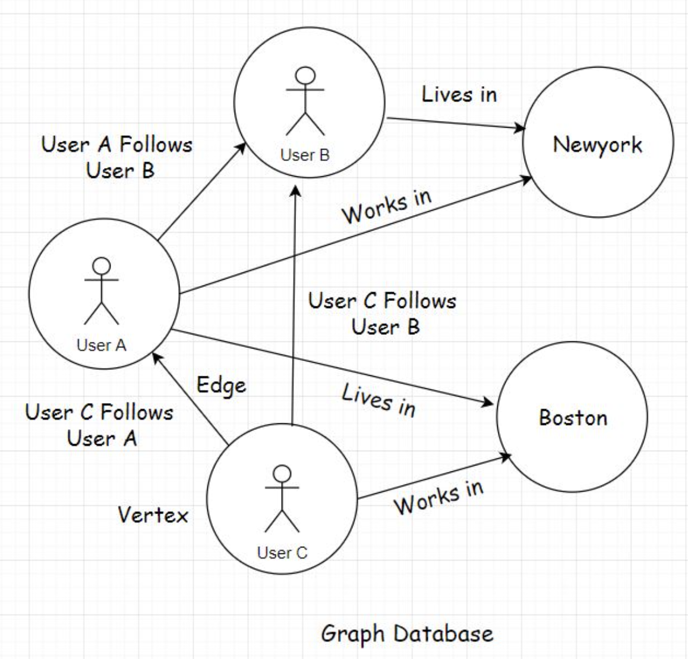
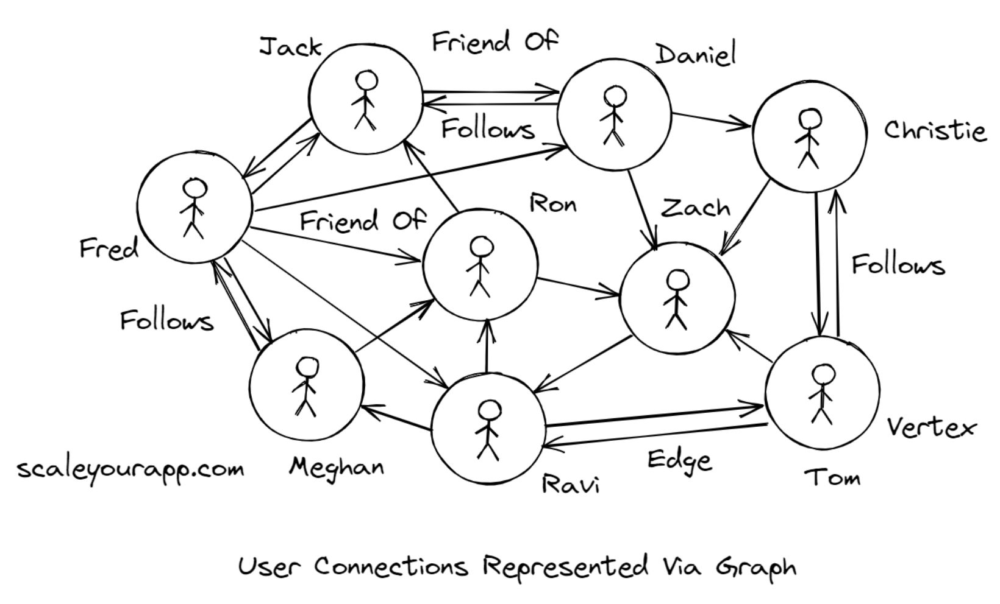
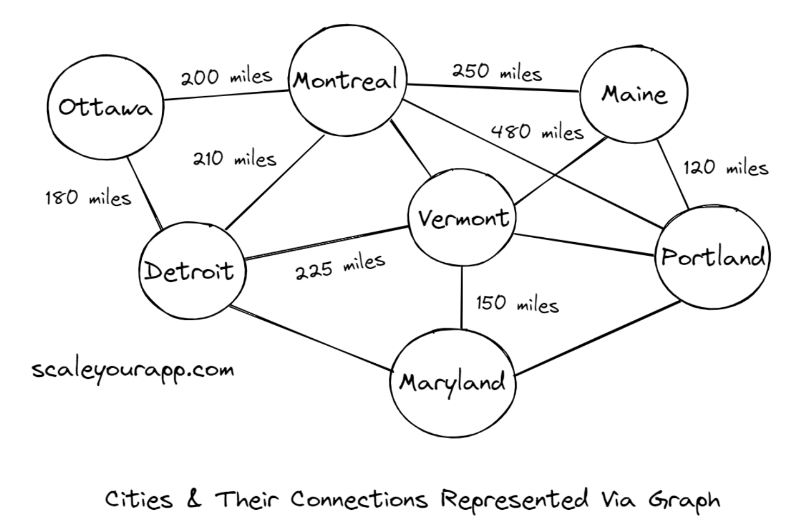

1. What is a database?• A database is a component in application architecture required to persist data. Data can be of many forms: structured, unstructured, semi-structured, and user state data.

1.1. Structured data• Structured data is the type of data that conforms to a certain structure, typically stored in a database in a normalized fashion.• Structured data is the most easy to work with since it does not need any sort of data preparation before we can interact with it.• • An example of this type of data is the details of a customer stored in a database row. The customer Id would be of integer type, the name would be of string type with a certain character limit, age would be of integer type and so on.• • Every column of the database row has some pre-defined rules for the data that is meant to be persisted in it. With structured data, we know what we are dealing with. Since the customer name is strictly of string type, we can run string operations on it without worrying about errors or exceptions.• • Structured data is typically managed by a query language such as SQL (Structured query language).1.2. Unstructured data• Unstructured data has no definite structure. It is the heterogeneous type of data consisting of text, image files, videos, multimedia files, pdfs, blob objects, word documents, machine-generated data, etc.• We generally have to deal with this kind of data when running data analytics. In a data analytics architecture, the data streams in from multiple sources such as IoT devices, social networks, web portals, industry sensors, etc., into the analytics system.• • We cannot directly interact with unstructured data. The initial data collected is pretty raw. We have to make it flow through a data preparation stage that segregates it based on business logic and then analytics algorithms are run to extract meaningful information.

1.3. Semi-structured data• Semi-structured data is a mix of structured and unstructured data. This data is often stored in data transport formats such as XML, JSON and handled as per the business requirements.1.4. User state• User state data is the data containing the information of activity the user performs on the website.• For instance, when browsing through an e-commerce website: the user typically browses through several product categories, sorts the products based on different parameters, clicks on recommended products, adds a few of them to the wishlist and the availability notification list, and so on.• • All this activity is the user state. Storing user state helps businesses improve the user browsing experience and the conversion rate on their website. Also, persisting the state enables the users to continue from where they left off when they log in next. It does not feel like they are starting fresh on a website.• • So, now that we are clear on the different types of data, let’s look into different kinds of databases. There are different kinds of databases fitting different use cases. We will understand them in the lessons lined up next.2. Relational Databases2.1. What is a relational database?• A relational database persists data containing relationships: one to one, one to many, many to many, many to one, etc. It is the most widely used type of database in web development.• Relational databases have a relational data model, data is organized in tables having rows and columns and SQL is the primary data query language used to interact with relational databases.• • MySQL is an example of a relational database.2.2. What are relationships?• Imagine you buy five different books from an online bookstore. When you create an account at the bookstore, the system will assign you a customer id say C1. Now, C1 will be linked to five different books B1, B2, B3, B4, and B5.• This is a one-to-many relationship. In the simplest of forms, one database table will contain the details of all the customers and another table will contain all the products in the inventory.• • One row in the customer table will correspond to multiple rows in the product inventory table.• • Upon pulling the user object with the id C1 from the database, we can easily find what books C1 purchased via the relationship model.2.3. Data consistency• Besides the relationships, relational databases also ensure saving data in a normalized fashion. In very simple terms, normalized data means an entity occurs in only one place/table in its simplest and atomic form and is not spread throughout the database.• This helps maintain consistency in the data. In the future, if we want to update the data, we update it in just one place as opposed to updating the entity spread through multiple tables. This is troublesome, and things can quickly get inconsistent.2.4. ACID transactions• Besides normalization and consistency, relational databases also ensure ACID transactions.• ACID stands for atomicity, consistency, isolation and durability.• • An ACID transaction means if a transaction, say a financial transaction, occurs in a system, it will be executed with perfection without affecting any other processes or transactions. After the transaction is complete, the system will have a new state that is durable and consistent.• • In case anything amiss happens during the transaction, say a minor system failure, the entire operation is rolled back.• • An ACID transaction happens with an initial state of the system, State A, and completes with a final state of the system, State B. Both the states are consistent and durable.• • A relational database ensures that the system is either in State A or State B at all times. There is no middle state. If anything fails, the system always rolls back to State A.3. When should you pick a relational database?• You should pick a relational database if you need strong consistency, transactions, or relationships. Typical examples of apps needing strong consistency are stock trading, personal banking, etc., and relational data is common in apps like Facebook, LinkedIn, etc.3.1. Transactions and data consistency• If you are writing software that has anything to do with money or numbers that makes transactions, ACID and data consistency super important to you.• Relational DBs shine when it comes to transactions and data consistency. They comply with the ACID rule, have been around for ages, and are battle-tested. More on strong consistency in the upcoming lessons.3.2. Large community• Additionally, relational databases have a large community. Seasoned engineers on the tech are readily available. You don’t have to go too far looking for them.3.3. Storing relationships• If your data has a lot of relationships that we typically come across in social networking apps like what friends of yours live in a particular city, which of your friends already ate at the restaurant you plan to visit today, etc. Relational databases suit well for storing this kind of data.• Relational databases are built to store relationships. They have been tried and tested and are used by big guns in the industry. Facebook leverages a relational database as their main user-facing DB.3.4. Popular relational database• Some of the popular relational databases used in the industry are:– MySQL, an open-source relationship database written in C and C++, has been around since 1995.– PostgreSQL, an open-source RDBMS written in C.– Microsoft SQL Server, a proprietary RDBMS written by Microsoft in C and C++.– MariaDB, Amazon Aurora, Google Cloud SQL, etc.4. NoSQL Databases - Introduction• As the name implies, NoSQL databases have no SQL; they are more like JSON-based databases built for Web 2.0• NoSQL databases are built for high-frequency read writes, typically required in social applications like micro-blogging, real-time sports apps, online massive multiplayer games, and so on.4.1. How is a NoSQL database different from a relational database?• One obvious question that would pop up in our minds is: why the need for NoSQL databases when relational databases were doing fine, battle-tested, well adopted by the industry, and had no major persistence issues?• Let’s understand the need for NoSQL databases.4.2. Scalability• Well, one big limitation with SQL-based relational databases is scalability. Scaling relational databases is not trivial. They have to be sharded, replicated to make them run smoothly on a cluster. This requires careful planning, human intervention and a skillset.• On the contrary, NoSQL databases can add new server nodes on the fly and scale without any human intervention, just with a snap of your fingers.• • Today’s websites need fast read-writes. There are billions of users connected with each other on social networks. A massive amount of data is generated every microsecond, and we need an infrastructure designed to manage this exponential growth.• • I’ve dug deep into this, why relational databases can’t scale on the fly, can they be horizontally scaled, like NoSQL databases? If yes, how? How can NoSQL databases horizontally scale, can they support ACID and much more in my systems design course. Check it out.4.3. Ability to run on clusters• NoSQL databases are designed to run intelligently on clusters. When I say intelligently, I mean with minimal human intervention.• Today, the server nodes even have self-healing capabilities. The infrastructure is intelligent enough to self-recover from faults. This makes things pretty smooth.• • However, all this innovation does not mean old-school relational databases aren’t good enough, and we don’t need them anymore.• • Relational databases still work like a charm and are still in demand. They have a specific use case. We have already gone through those in the previous lesson.• • Also, NoSQL databases had to sacrifice strong consistency, ACID transactions, and much more to scale horizontally over a cluster and across the data centers.• • The data with NoSQL databases is more eventually consistent as opposed to being strongly consistent.• • So, this naturally means NoSQL databases aren’t a silver bullet. They, too, have a use case. And this is completely fine. We don’t need silver bullets. We aren’t hunting werewolves. We are up to a much harder task connecting the world online.• • I’ll talk about the underlying design of NoSQL databases in much more detail and why they have to sacrifice strong consistency and transactions in the upcoming lessons.5. Features of NoSQL Databases5.1. Pros of NoSQL databases• Besides their scalable design, NoSQL databases are also developer-friendly. What do I mean by that?5.1.1. Learning curve not so steep and schemaless• The learning curve of NoSQL databases is less steep than that of relational databases. When working with relational databases, a big chunk of our time goes into learning to design well-normalized tables, setting up relationships, trying to minimize joins, and so on.• Also, one needs to be pretty focused when designing the schema of a relational database to avoid running into issues in the future.• • Think of relational databases as a strict headmaster. Everything has to be in place, neat and tidy, and things need to be consistent. However, NoSQL databases are a bit chilled out and relaxed.• • There are no strictly enforced schemas. You can work with the data however you want. You can always change stuff and move things around. Entities have no relationships. Thus, there is a lot of flexibility, and you can do things your way.• • Wonderful, right?• • Not always!! This flexibility is both good and bad at the same time. Being so flexible, developer-friendly, having no joins, relationships, etc. makes it good. But NoSQL databases have limitations too.5.2. Cons Of NoSQL databases5.2.1. Inconsistency• Since the data is not normalized, this introduces the risk of it being inconsistent. An entity, since spread throughout the database, has to be updated at all places. It’s hard for developers to remember all the locations of an entity in the database; this leads to inconsistency.• Failing to update an entity at all places makes the data inconsistent. This is not a problem with relational databases since they keep the data normalized.5.2.2. No support for ACID transactions• Also, NoSQL distributed databases don’t support ACID transactions. A few claim to do so, though they don’t support them at a global deployment level. ACID transactions in these databases are limited to a certain entity hierarchy or a small deployment region where they can lock down nodes to update them.• Note: ACID transactions in distributed systems come with terms and conditions applied.• • I’ve worked on a few NoSQL databases, MongoDB, Elasticsearch, Google Cloud Datastore. An upside of working with NoSQL databases is that we don’t have to be a pro in database design to develop an application.• • Things are comparatively simple because there is no stress of managing joins, relationships, n+1 query issues and so on. Just fetch the object using its key, which is a constant O(1) operation, making the NoSQL databases fast and simpler.5.3. Popular NoSQL databases• Some of the popular NoSQL databases used in the industry are MongoDB, Redis, Neo4J, Cassandra, Memcache, etc.6. When to pick a NoSQL Database?6.1. Handling a large number of read-write operations• NoSQL databases are built to handle a large number of read-write operations due to the eventual consistency model. With the ability to add nodes on the fly, they can handle more concurrent traffic, enabling us to scale fast.• They are also built to handle big data with minimal latency. Pick a NoSQL database if you are looking to scale fast and willing to give up on strong consistency.6.2. Flexibility with data modelling• A NoSQL DB is a good fit if you are not sure about your data model during the initial phases of development and things are expected to change at a rapid pace. NoSQL databases offer us more flexibility.6.3. Eventual consistency over strong consistency• NoSQL databases are a good pick when we do not need ACID transactions and are okay to give up strong consistency.• A good example of this is a microblogging site like Twitter. When a celebrity’s tweet blows up and everyone likes and re-tweets it from across the world, does it matter if the like count goes up or down a tad bit for a short while?• • The celebrity certainly wouldn’t care if instead of the actual 5 million 500 likes, the system shows the like count as 5 million 250 for a short while.• • When a large application is deployed on hundreds of servers spread across the globe, the geographically distributed nodes take some time to reach a global consensus.• • Until they reach a consensus, the value of the entity is inconsistent. The value of the entity eventually becomes consistent after a short while. This is what eventual consistency is.• • However, the inconsistency does not mean any sort of data loss. It just means that the data takes a short while to travel across the globe via the internet cables under the ocean to reach a global consensus and become consistent.• • We experience this behavior all the time, especially on YouTube. Often you might see a video with 10 views and 15 likes. How is this even possible?• • It’s not. The actual views are already more than the likes. It’s just the count of views is inconsistent and takes a short while to get updated. I will discuss eventual consistency in more detail in the upcoming lessons.6.4. Running data analytics• NoSQL databases also fit best for data analytics use cases, where we have to deal with an influx of massive amounts of data.• There are dedicated databases for use cases like this, such as time-series databases, wide-column, document-oriented databases, etc. I’ll talk about each of them later in this chapter.7. Is NoSQL More Performant Than SQL?• Is NoSQL more performant than SQL? Developers ask this question all the time when trying to decide between an SQL and a NoSQL database. And I have a one-word answer for this.• No!!• • From a technology performance benchmarking standpoint, both relational and non-relational databases are equally performant.• • More than the technology, it’s how we design our systems using a certain technology that decides the performance.• • Both SQL and NoSQL tech have their use cases. We have already gone through them in the former lessons. So, don’t get caught up in the hype. Understand your use case and pick the fitting technology.7.1. Why do popular tech stacks always pick NoSQL databases?• Picking the technology based on the use case makes sense, but why do the popular tech stacks always prefer NoSQL databases? For instance, look at the MEAN (MongoDB, ExpressJS, AngularJS/ReactJS, NodeJS) stack.• Well, most of the online applications have standard use cases, and these tech stacks have them covered. There are also commercial reasons behind this.• • There are a plethora of tutorials available online and a mass promotion of popular tech stacks. With these resources available, it’s easy for beginners to pick them up and write their applications as opposed to researching technologies fitting their use case.• • We don’t always need to pick the popular stacks. Rather, we should pick what fits best with our use case.• • This course has a separate lesson on how to pick the right tech stack for our app. We will continue this discussion there.• • Coming back to performance, as opposed to technology, the performance of an application is more dependent on factors like application architecture, database design, bottlenecks, network latency, etc.• • If we use multiple joins in a relational database, the response will inevitably take more time. If we remove all the complex relationships and joins, a relational database will be as quick as a NoSQL one.7.2. Real-world case studies• Facebook uses MySQL for storing its social graph of millions of users. Although it did have to change the DB engine and make some tweaks, MySQL fits best with its use case.• Quora uses MySQL pretty efficiently by partitioning the data at the application level. Here is an interesting read on it.• • Note: A well-designed SQL data store will always be more performant than a not so well-designed NoSQL store.7.3. Using both SQL and NoSQL databases in an application• You may be wondering, can’t I use both SQL and a NoSQL datastore in my application? What if I have a requirement fitting both?• You can!! Moreover, all the large-scale online services use a mix of both to achieve the desired persistence behavior.• • The term for leveraging the power of multiple databases clubbed together is polyglot persistence. 8. Polyglot Persistence• Polyglot persistence means using several distinct persistence technologies such as MySQL, MongoDB, Memcache, Cassandra, etc., together in an application to fulfill its different persistence requirements.8.1. Real-world use case• Imagine designing a social networking app like Facebook.8.2. Relational database• To store relationships like persisting friends of a user, friends of friends, what rock band a user likes, what food preferences users have in common with their friends, etc., we can pick a relational database like MySQL or a graph database like Neo4J.8.3. Key-value store• For low latency access of the frequently accessed data, we would need to implement a cache using a key-value store like Redis or Memcached.• We can use the same key-value data store to store user sessions in a distributed system achieving a consistent state across the clusters.8.4. Wide column database• To understand user behavior, we need to set up an analytics system to analyze the big data generated by the users. We can do this using a wide-column database like Cassandra or HBase.8.5. ACID transactions and strong consistency• The popularity graph of our application continues to rise and doesn’t appear to slow down. The businesses now want to run ads on our portal. Hallelujah! :)• To enable the businesses pay for the ads they intend to run on our platform, we need to implement a payment system. For this, we need ACID transactions and strong consistency—time to pick a relational database.8.6. Graph database• To keep the users stay longer on our application and enhance their browsing experience, we have to start recommending the latest content to the users to keep them engaged. We need to implement a recommendation system. For this, a graph database would fit best.• By now, our application is loaded with multiple features, and everyone loves it. How cool would it be if a user could run a search for other users on the platform, business pages, groups, and more and connect with them?8.7. Document Oriented Store• To implement this, we can use an open-source document-oriented datastore like Elasticsearch. The product is pretty popular in the industry for implementing a scalable search feature on apps. All the search-related data can be streamed to the elastic store from other databases powering different features of our app.

8.8. Complexity that comes along• We got an insight into how we leverage multiple databases to fulfill the different persistence requirements of our application. However, one significant downside of this approach is the increased complexity in making all these different technologies work together in a distributed environment.• A lot of effort goes into building, managing and monitoring polyglot persistence systems. What if there was something simpler? Something that would save us the pain of putting together everything ourselves.9. Multi-Model Databases• Until now, the databases supported only one data model. It could either be a relational, document-oriented, graph, or any other specific data model.• However, with the advent of multi-model databases, we can leverage different data models by just implementing a single database system.• • Multi-model databases support multiple data models like the graph, document-oriented, relational, etc. They also avert the need for managing multiple persistence technologies in a single service. They reduce the operational complexity by notches. With multi-model databases, we can leverage different data models via a single API.
9.1. Popular multi-model databases• Some of the popular multi-model databases are ArangoDB, CosmosDB, OrientDB, Couchbase, etc.• In the upcoming lessons, we will cover the concepts like eventual consistency and strong consistency that are key to understanding distributed systems.10. Eventual Consistency• Eventual consistency is a data consistency model that enables the datastores to be highly available. It is also known as optimistic replication and is key to distributed systems.• So, how does it work exactly?10.1. Real-world use case• Think of a popular microblogging site deployed worldwide in different geographical regions like Asia, America, Europe, etc. Each geographical region has multiple data center zones: North, East, West, and South. And each of these data center zones has multiple clusters with numerous server nodes running.• These server nodes are application server nodes, message queue nodes, database nodes and nodes powering other components of an application.• • In this lesson, we will focus on the database nodes that run in different data center zones across continents, enabling the micro-blogging site to persist data efficiently.• • Since there are so many nodes running, there is no single point of failure. The datastore service is highly available. Even if a few nodes go down, the persistence service as a whole is still up.• • Now assume a celebrity creates a tweet on the website that goes viral, and everybody around the world starts liking it.• • At a point in time, a user in Japan likes the tweet, which increases the like count of the tweet from, say, 100 to 101. At the same time, a user in America, a different geographical zone, clicks on the tweet and sees the like count as 100, not 101.• • Why did this happen?• • Because the new updated value of the tweet’s like counter would need some time to move from Japan to America and update the server nodes running there, reaching a consistent state globally.• • Because of the geographical distance between the two continents, the user in America sees an old inconsistent value, that is, 100.• • However, when they refresh their web page after a few seconds, the like counter value gets updated to 101. The data was initially inconsistent but eventually became consistent across all the server nodes deployed around the world. This is what eventual consistency is. Eventually, the data became consistent.•

• Let’s take it one step further. What if, at the same time, both the users in Japan and America like the tweet and a user in another geographic zone, say Europe, sees the tweet?• In this scenario, all the nodes in different geographic zones will have different tweet like counts, and they will take some time to reach a consensus.• • The upside of eventual consistency is that the system can add new nodes on the fly. Also, the database nodes are available to the application enabling the end-users to perform write operations continually without the need to lock any of the database nodes.• • With the eventual consistency data model, millions of users worldwide can update the tweet’s like counter concurrently without having to wait for the system to reach a consistent state across all nodes deployed globally. This feature enables the system to be highly available.• • Eventual consistency fits best for use cases where the data accuracy doesn’t matter much, like in the use case above.• • Other eventual consistency use cases are: the system keeping the count of concurrent users watching a live video stream, dealing with massive amounts of analytics data, a slight data inaccuracy in real-time won’t matter much.• • On the contrary, there are use cases where the data has to be laser accurate, like in banking and stock markets. We just cannot have our systems eventually consistent. In these use cases, we need strong consistency.11. Strong Consistency• Strong consistency simply means the data has to be strongly consistent at all times; all the server nodes across the world should contain the same value of an entity at any point in time. The only way to implement this behavior is by locking down the nodes as they are being updated.11.1. Real-world use case• We will continue the same eventual consistency example from the previous lesson. To ensure strong consistency in the system, when the user in Japan likes the post, all the nodes across different geographical zones have to be locked down to prevent any concurrent updates.• This means that, at one point in time, only one user can update the tweet like counter.

• Once the user in Japan updates the like counter from 100 to 101. The value gets replicated globally across all nodes. Once all the nodes reach a consensus, the locks get lifted.• Now, other users can like the tweet. If the nodes take a while to reach a consensus, they have to wait until then.• • Well, this behavior surely is not desirable for social applications, but think of a stock market application where the users see different prices of the same stock at one point in time and update it concurrently. This would create chaos.• • To avoid this confusion and chaos, we need our systems to be strongly consistent at all times. The nodes have to be locked down for updates.• • Queuing all the write requests is one good way of making a system strongly consistent. The implementation is beyond the scope of this course. However, there is a lesson on this in the message queue chapter.• • So, by now, I am sure you have realized that moving ahead with the strong consistency model hits the capability of the system to scale and be highly available. While one user updates the data, the system does not allow other users to perform concurrent updates. However, this behavior is what enables the implementation of ACID transactions. In my distributed systems design course, I’ve dug deep into this.• • Distributed systems like NoSQL databases that scale horizontally on the fly don’t support ACID transactions globally, and this is due to their inherent design. Well, the whole reason for the development of NoSQL tech was its ability to scale and be highly available.12. CAP Theorem• CAP stands for consistency, availability, partition tolerance. We’ve gone through consistency and availability in great detail. Partition tolerance means fault tolerance, how tolerant the system is of failures or partitions. The system should ideally keep working even when a few nodes go offline.• There are many definitions of this theorem that you will find online. Most of them state that amongst the three, consistency, availability, and partition tolerance, we can only pick two. I find this a teeny tiny bit confusing, so I will try to give a simpler explanation of the theorem.• • The CAP theorem states that in case of a network failure, when a few of the system nodes are down, we have to choose between availability and consistency.• • If we pick availability, this means when a few nodes are down, the other nodes are available to the users to perform write operations updating the application data. In this situation, the system is left inconsistent because the nodes that are down don’t get updated with the new data. When they come back online and if a user fetches the data from them, they’ll return the old values they had when they went down.• • If we pick consistency, in this scenario, we have to lock down all the nodes for further writes until the nodes that have gone down come back online. This would ensure the strong consistency of the system because all the nodes will have the same entity values.• • Picking between availability and consistency largely depends on our use case and the business requirements. We have been through this in great detail. Also, the design of the distributed systems (CAP theorem) forces us to choose one. We can’t have both availability and consistency at the same time.• • Nodes spread around the globe will take some time to reach a consensus. It’s impossible to have zero latency.13. Types of Databases• There are numerous types of databases that are available to the application developers, catering to specific use cases. These are:– Document-oriented database– Key-value datastore– Wide-column database– Relational database– Graph database– Time-series database– Databases dedicated to mobile apps and so on.• • In the polyglot persistence lesson, we understood the need for different types of databases. We also covered relational databases in-depth and discussed when to pick a relational one.14. Document-Oriented Database• Document-oriented databases are the leading types of NoSQL databases. They store data in a document-oriented model in independent documents. The data is generally semi-structured and stored in a JSON-like format.• The data model is similar to the data model of our application code, so it’s easier to store and query data for developers.• • Document-oriented stores go along well with the Agile software development methodology as it is easier to change things with evolving demands when working with them. Though datastores/technologies and software development methodologies do not have any co-relation per se.14.1. Popular document-oriented databases• Some of the popular document-oriented stores used in the industry are MongoDB, CouchDB, OrientDB, Google Cloud Datastore, and Amazon DocumentDB.14.2. When do I pick a document-oriented data store for my project?• Pick a document-oriented data store if:– You are working with semi-structured data and need a flexible schema that will change often.– You aren’t sure about the database schema when you start writing the app, there is a possibility that things might change over time and you need something flexible that you could change over time with minimum fuss.– You need to scale fast and stay highly available.– • Typical use cases of document-oriented databases include:– Real-time feeds– Live sports apps– Writing product catalogues– Inventory management– Storing user comments– Web-based multiplayer games• • Being in the family of NoSQL databases, document-oriented databases provide horizontal scalability and performant read-writes because they cater to CRUD (Create Read Update Delete) use cases. These include scenarios where there isn’t much complex relational logic involved and all we need is quick persistence and data retrieval.14.3. Real-world implementations• Here are some of the good real-world implementations of the tech:• SEGA uses Mongo-DB to improve the experience for millions of mobile gamers.• • Wix Engineering uses MongoDB to host sites built on their platform.15. Graph Database• Graph databases are a part of the NoSQL family. They store data in nodes/vertices and edges in the form of relationships. Each node in a graph database represents an entity, it can be a person, a place, a business, etc., and the edge represents the relationship between the entities.

15.1. Why use a graph database?• There are instances when complex relationships stored in a relational database across tables become slow to query. Developers have to unwillingly use joins to fetch data and joins across multiple tables slow things down.• With the graph data model, there is less fighting the database in production since data is accessed with low latency. And there is a reason for this.• • Graph data model fits best for modelling real-world use cases where entities have complex relationships.15.2. Real-world use cases of graph databases15.2.1. Modeling relationships between users in social networks• Facebook built its graph search feature using the graph data structure and the associated algorithms. The core feature of social networks today is to map the relationships between their users. And these relationships are multi-dimensional; besides just mapping friendships, these networks also map links between users and their favourite restaurants, cuisines, sports teams, etc.

• Empowered by these relationships, these networks can recommend users where to: dine, travel, be friends with, and so on.• A graph data structure has a set of vertices or nodes and the associated edges. Vertices/nodes are typically seen as users or entities in a network, and the edges are seen as relationships, as you see in the illustration.• • There are two primary ways of representing graphs: Adjacency List and the Adjacency Matrix; which one to pick depends on the kind of operation to be performed on the graph.• • Adjacency Matrix ideally helps figure out queries like if a relationship between two nodes exists, in constant time O(1), though it is a bit space-intensive. If the nodes in a graph contain a lot of edges, we tend to represent it with the adjacency matrix. On the flip side, if the edges are sparse, we represent the graph using the adjacency list.• • Graphs are traversed using the search algorithms depth-first search and breadth-first search, which are implemented using stack and queue data structures, respectively. Depth-first search is primarily run to find paths and connectivity between the nodes, detect cycles in a graph, and such. Breadth-first search is used to find the shortest path between two nodes.• • Though this is not a tutorial on the graph data structure, I am delving into the details just for the sake of helping you understand how graph databases are built to model real-world data having relationships.• • In graph databases, the relationships are stored differently from how relational databases store relationships.• • Graph databases are faster because the relationships in them are not calculated at query time, as it happens with the help of joins in the relational databases. Rather, the relationships here are persisted in the datastore in the form of edges, and we just have to fetch them; no need to run any sort of computation at the query time.15.2.2. Google maps is one big graph• Besides mapping user relationships etc., in social networks, graphs also represent cities and networks. Google Maps and cab booking apps like Uber, Ola are perfect examples of this.• In Google Maps, nodes represent cities, and the edges are the roads between these cities. The nodes could further represent places in a city, intersections, and even houses. The entire application is one big map that heavily uses graph theory to find the shortest distance between the two places.

• The same goes for flight networks where each node represents an airport and the edges flights between them.• In graph theory, based on the use case, different algorithms are used to calculate the shortest path between two nodes. A few of the popular ones are Dijkstra’s algorithm, Bellman-Ford algorithm, A* search algorithm, Floyd–Warshall algorithm, Johnson’s algorithm, and the Viterbi algorithm.• • Mobility service providers like Uber, Ola use different routing algorithms to find an efficient route between pickup and drop locations.15.2.3. Graphs in Google’s page rank algorithm• Google’s page rank algorithm is built on graph theory. The web pages are considered as nodes, and the links between them, the edges. Further, the nodes have weights. Weights decide the authority of a page on the web. If a web page contains detailed information on a particular topic and links to credible sources, it is given a higher weight, and the pages higher in weight are ranked first.• These are a few examples of popular real-world products and features modeled on graphs and the associated algorithms that have genuinely changed our lives.15.3. When do I pick a graph database?• Ideal use cases of graph databases are building social, knowledge, and network graphs, writing AI-based apps, recommendation engines, fraud analysis apps, storing genetic data, and so on.• Anytime you need to store complex relationships, consider a graph database. Graph databases help us visualize our data with minimum latency. A popular graph database used in the industry is Neo4J.15.4. Real-world Implementations• Here are some of the real-world implementations of the tech:– Liquid is a graph database built by LinkedIn to support human real-time querying of data on their platform.– Food discovery at Uber Eats with graph learning.– Walmart shows product recommendations to its customers in real-time using the Neo4J graph database.– NASA uses Neo4J to store “lessons learned” data from their previous missions to educate the scientists and engineers.16. Key-Value Database• Key-value databases are also a part of the NoSQL family. These databases use a simple key-value pairing method to store and quickly fetch the data with minimum latency.16.1. Features of a key-value database• Due to the minimum latency they ensure, that is constant O(1) time, the primary use case for these databases is caching application data.• The key serves as a unique identifier and has a value associated with it. The value can be as simple as a string and as complex as an object graph.• • The data in key-value databases can be fetched in constant time O(1), and there is no query language required to fetch the data. It’s just a simple no-brainer fetch operation. This ensures minimum latency.• • As discussed earlier in the course, these databases are also used to achieve a consistent state in distributed systems.16.2. Popular key-value databases• Some of the popular key-value data stores used in the industry are Redis, Hazelcast, Riak, Voldemort, and Memcached.16.3. When do I pick a key-value database?• If you have a use case where you need to fetch data real fast with minimum fuss, you should pick a key-value datastore.• Key-value stores are built to serve use cases that require super-fast data fetch.• • Typical use cases of a key-value database are:– Caching– Persisting user state– Persisting user sessions– Managing real-time data– Implementing queues– Creating leaderboards in online games and web apps– Implementing a pub-sub system16.4. Real-world implementations• Here are some of the real-world implementations of the tech:– Twitter leverages Redis in its infrastructure.– Google Cloud uses Memcached to implement caching on their cloud platform.17. Time Series Database• Time-series databases are optimized for tracking and persisting data that is continually read and written in the system over a period of time.17.1. What is time-series data?• It is the data containing data points associated with the occurrence of events with respect to time. These data points are tracked, monitored, and aggregated based on specific business logic.• Time-series data is generally ingested from IoT devices, self-driving vehicles, industry sensors, social networks, stock market financial data, etc.• • What is the need for storing such massive amounts of time-series data?17.2. Why store time-series data?• Studying data streaming-in from applications helps us track the behavior of the system as a whole. It allows us to study user patterns, anomalies, and how things change over time.• Time-series data is primarily used for running analytics and deducing conclusions. It helps the stakeholders make future business decisions by looking at the analytics results. Running analytics enables us to evolve our product continually.• • Regular databases are not built to handle time-series data. With the advent of IoT, these databases are getting pretty popular and adopted by the big guns in the industry.17.3. Popular time-series databases• Some of the popular time-series databases used in the industry are Influx DB, Timescale DB, Prometheus, etc.17.4. When to pick a time-series database?• If you have a use case where you need to manage data in real-time, continually over a long period of time, a time-series database is what you need.• As you know, time-series databases are built to deal with streaming data in real-time. Its typical use cases are fetching data from IoT devices, managing data for running monitoring and analytics, writing an autonomous trading platform that deals with changing stock prices in real-time, etc.17.5. Real-world implementations• Here are some of the real-world implementations of the tech:– M3DB (a time-series database) powers time-series metrics workflows at Uber.– Apache Druid, a time-series database, powers real-time analytics at Airbnb.18. Wide-Column Database• Wide-column databases belong to the NoSQL family of databases and are primarily used to handle massive amounts of data, technically called Big Data.• Wide-column databases are perfect for analytical use cases. They have a high performance and a scalable architecture.• • Also known as column-oriented databases, wide-column databases store data in a record with a dynamic number of columns. A record can hold billions of columns.18.1. Popular wide-column databases• Some of the popular wide-column databases are Cassandra, HBase, Google BigTable, ScyllaDB, etc.18.2. When To Pick a wide-column database?• If you have a use case where you need to grapple with Big Data, a wide-column database would fit best.• Wide-column databases are built to manage Big Data, ensuring scalability, performance, and high availability.18.3. Real-life implementations• Some of the real-world implementations of the tech:– Netflix uses Cassandra in the analytics infrastructure.– Adobe and other big guns use HBase for processing large amounts of data.